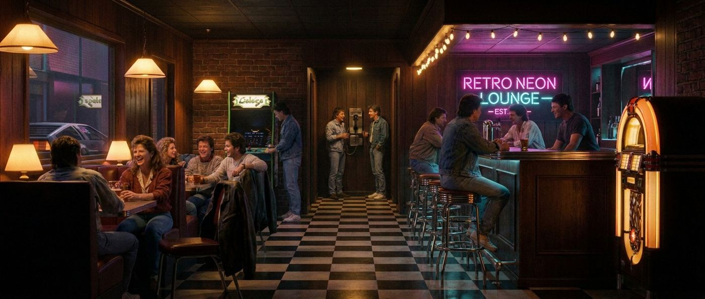
The Neon Decade
A Field Guide to the Signs, the Spaces, and the Light
Eight places you’ve already been. We’re just going back.
Download the PDFThe Places That Never Really Left Us.
Whether you've been here before or are visiting for the first time, the door's open.
These are places that people who lived through the 80s will instantly recognize. The hum of a transformer in a dark room. Argon through glass at two in the morning. A sign you haven't thought about in thirty years stopping you cold on an ordinary Tuesday afternoon.
This is your field guide to the places that have always been there lurking in the sunset of a summer night — including the one thing nobody talks about enough: how connected we actually were. Before the noise. Before the scroll. Before everyone disbanded into solitary endeavours.
These places still exist. So does the feeling of being in them together.
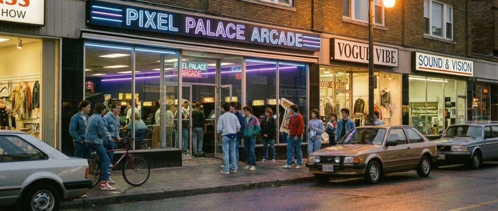
The Arcade
“The Room That Hummed”
The room hummed before you even walked in.
The vibe was electric. The static and pop of twenty, thirty machines running at once, each one pulling its own current from the wall, warming its own cathode, cycling its own demo loop for whoever walked past. The sound had its own rhythm. It was structural. It held the place up.
Quarters were the lifeblood. You got a roll from the bank, raided your dad's coin jar, shook out every jacket pocket until the math worked. Every machine in the place ran on that coin — the weight of it in your palm, the click of it hitting the slot, the half-second of held breath before the credit registered. Then the screen woke up and asked how many players — it was a digital rush. Adrenaline, moving through you like a current. The game hadn't even started and you were already gone.
Two dimes and a nickel didn't cut it, and everybody knew somebody who tried it once. And God forbid the change machine was out of order that day. Because when your quarters ran out, the room didn't change — the lights kept blinking, the machines kept cycling, twenty other kids kept playing. The arcade just stopped being yours. Time was up. You were done.
It’s in your bones.
The carpet, if there was one, was dark and sticky in specific spots. The light was neon accents and monitor glow with the occasional bare bulb over a prize counter. Nothing matched. Everything matched. A mosaic of the era. There was a Pac-Man in the corner, a Galaga next to it, a Dragon’s Lair against the far wall with its own small crowd, quarters lined along the bottom of the screen. The rising whine from the Tron cabinet, climbing like something was about to break free, cut through the room.
Nobody explained the rules. You watched someone play until you understood. Then it was your turn, your quarter, your machine, your thirty seconds before the continue screen, your decision.
It’s a specific feeling that doesn’t have a name — the one you got when you walked through that door and the sound hit you and the light changed and you knew you were exactly where you were supposed to be.
It’s in your bones.
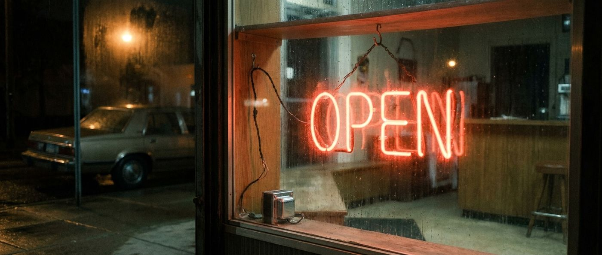
The Open Sign
“Still On”
Sometimes you can feel lost or uncertain, like headlights searching down a stretch of road you don't recognize. The gas gauge lower than you'd like to admit. A wrong turn that put you in a neighborhood you didn't know and didn't much like the look of; that feeling of being unmoored inside your own life some Tuesday at midnight, no real crisis, just the sense of having drifted somewhere you couldn't quite place.
The sign, like a beacon, was just there, lit, fixed, exactly where it had always been. And something in your chest let go before you'd worked out the why of it. Your shoulders dropped half an inch and your breathing slowed. You suddenly felt like you could get your bearings.
Most signs tell you what something is. The OPEN sign told you what was possible. It was a promise made to whoever happened to need it... whether you needed coffee, or company, or just somewhere that wasn't your own kitchen at an hour when the house had gone quiet in that particular way houses do.
Some places had a bell. It told whoever was in the back you'd arrived before you said a word, the faint sound of a radio playing from the other room at a volume meant for only one person.
Most signs tell you what something is. The OPEN sign told you what was possible.
Red or blue, single-tube or double, bent glass hung on a black cord in a window that hadn't been cleaned since the Ford administration. It didn't matter how modest the place was. The OPEN sign meant someone was inside. Someone had kept the lights on. Someone was waiting. Someone who could help you with directions back to the highway, a spare tire, a pay phone, or a place to sit until your hands stopped shaking.
There are hundreds of variations. Each with its own particular allure. The classic red rectangle. The cursive script in cherry red with a blue outline. The ones with the little neon border that buzzed slightly when the transformer was cold. The handmade ones — two tubes, no art, just the word, and that was enough. The good ones had a transformer with that particular low hum, steady and barely perceptible. You felt it more than heard it.
There's a reason people put them in their homes now. In their garages, their basements, above the bar cart in the corner.
They're not decorations. They are a comfort. A reminder.
When life feels impossible, there’s still somewhere to go.
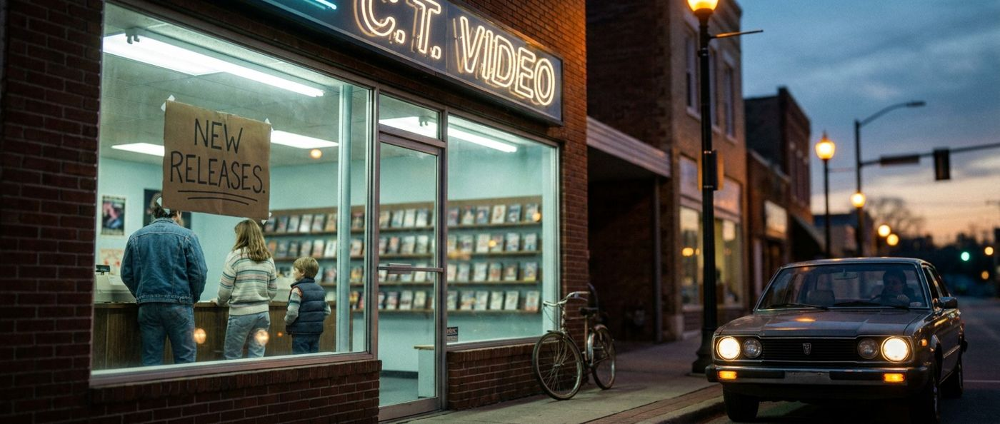
The Video Store
“Friday Night, Every Friday Night”
If Friday night had a ritual, it might have started here. After dinner or on the way home from school or work.
The carpet had a particular design. A little too funky for a commercial business or someone’s house. It could have been dark with splashes of neon orange & green in geometric shapes or maybe it was a depressed low-pile grey with a mix of blue and black. It showed signs of wear near the New Releases wall where everyone stood, and again at the checkout counter. The VHS boxes stood upright on the shelves, the actual tapes tucked away behind the counter.
You generally knew what you wanted. But if you weren’t 100% or they were out of copies, you’d browse and possibly turn a corner, finding something with cover art you’d never seen. A monster, a woman with a gun, a spaceship that didn’t look like any spaceship you’d ever seen. You’d flip it over and read the back and then the decision got complicated.
The one you found was often better.
The person behind the counter knew things… what films the director or main actor had made that were better than the one you were thinking of renting, the scoop on the indie film earning “street cred” at Sundance, and usually the best time to score new releases.
Sometimes you left with two, the one you came in for, and the one you found. The one you found was often better.
The drive or bike ride home, the pause to rewind the tape to the beginning because whoever had it last wasn’t kind and hadn’t, the moment the FBI warning told you not to copy or distribute the tape. This was the moment you had been anticipating.
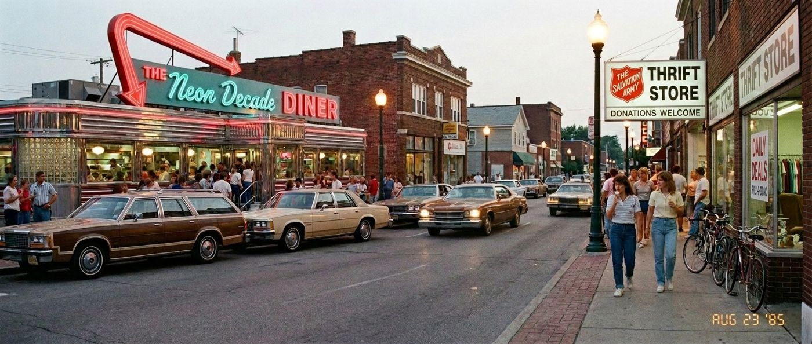
The Neon Diner
“The Booth That Remembered You”
The booth remembered the shape of everyone who'd sat in it.
Vinyl the color of dried rust, cracked along the seam where the seat met the back, patched at some point with electrical tape that was now older than most cars in the lot outside, a couple of them nosed in at angles, one engine still ticking as it cooled. The table was formica, the woodgrain pattern worn pale at the edge where forearms had leaned for thirty years or more. The surface was neither clean nor dirty, the fluorescent light from the panels overhead flattening everything under it.
The sign in the window said OPEN. Plastic-faced, lit from behind by a tube you never saw, the kind of glow that didn't flicker or hum, just stayed on. It said the same thing at 11pm on a Wednesday that it had said at noon.
One couple in the back booth, a man at the counter with coffee, the cook behind the pass-through flipping through a magazine.
Someone built this place to outlast themselves.
A radio behind the counter, turned low, tuned to something that had been playing since the afternoon shift. Cigarette smoke hanging somewhere between the ceiling panels and eye level, thin enough you stopped noticing it after the first minute. An ashtray on the counter, glass, already half full. Coffee smell that wasn't fresh. Maybe burnt a little from sitting too long on the warming plate. Grease seeping into the walls after enough years of the grill running.
The coffee came frequently. Bunn carafe, brown handle. You hadn't asked. You didn't need to.
There's a quality to a diner at night that is almost impossible to describe to someone who hasn't been inside one. The light isn't warm, exactly. It's fluorescent, a little too even, a little too honest. But it also does something to the window, anyway. The reflections show you the room doubled, counter and stools and sign laid over the dark street outside. You're inside and outside at the same time.
Someone built this place to outlast themselves. The sign has been on since before you were born. It will be on after you're gone.
Order something. Stay a while. When you're done, the check goes on the spike by the register, written by hand, and nobody's in a hurry for you to settle up.
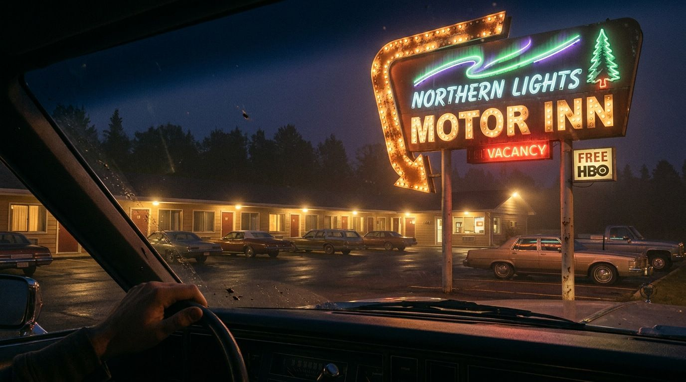
The Motel Marquee
“The Sign on the Highway”
You saw it from half a mile down the highway.
That was the whole point. The motel marquee was designed for that moment. The moment before you realized you needed it. For the lonely traveler on a dark interstate at ten at night, or the one on vacation with a family in the back of a station wagon, who’d been driving since noon. It had to be bright. It had to be visible, long before the decision to stop for the night was made. It had to say: Hey, over here! We have beds. You can rest here until morning. You don’t have to keep going.
The messages were changed daily with a pole and a bag of letters, depending on the circumstances. Weekly specials. Local events. The orange glow of the word VACANCY as you got close. Or maybe they had flipped the switch and there was NO VACANCY. It was either the best thing you saw all day or the reason you were back on the highway for another forty-five minutes. Sometimes it meant the Elvis Impersonator convention was in town.
The neon sign was usually the name. The letters standing three feet tall, made of bent tubing, some of them in analog fonts that don’t exist anymore, custom work from a sign shop that’s also probably out of business. The halo they threw was orange, or pink, or blue, or that particular red that faded toward rose at the edges and carried down over a parking lot that smelled like chlorine off a pool nobody used after dark, hot asphalt cooling, a diesel engine idling two spaces down.
You’ve felt that subtle exhale. That’s what we’re after.
You checked in under that light with an actual metal key hooked to an oblong piece of plastic stamped with your room number. A window a/c unit already rattling before you got the door open. The room carried its own particular flavor of mustiness: cigarette smoke baked into curtains that had technically been cleaned, odour of cheap detergent from a bedspread with a pattern you'd never choose yourself. None of it mattered. You were off the road and had a place to lay your head. That was the entire transaction.
In the morning the sign looked different. Plain. Paler. Smaller. The magic was in the darkness. It was in the way the light carried farther than it had any right to, the way you could see it from the exit ramp and feel good that you’d reached a safe point on your road trip where you could unwind.
You’ve felt that subtle exhale.
That’s what we’re after.
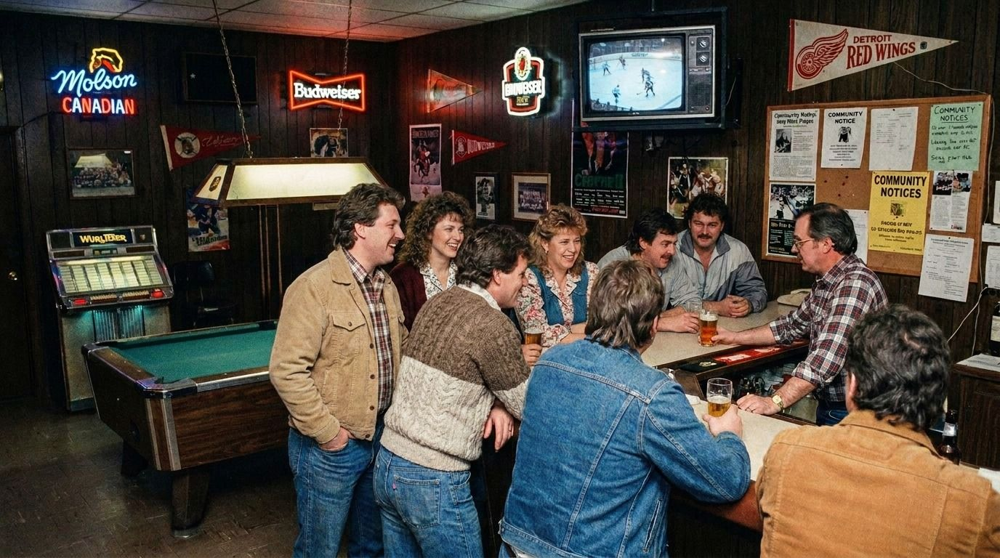
The Corner Bar
“The Back Room”
The good ones didn’t advertise. They didn’t need to.
They had a sign above the door. Sometimes the name was in neon, other times it was painted on glass, or maybe just a metal street number nailed into the wood above an old door with forest-green paint flaking off it, and nothing else. They’d been there long enough that the neighborhood knew it well. Maybe it was up a flight of stairs or around back, off the main strip, away from prying eyes. If you were new to town, someone took you there. You didn't discover these places on your own. You were brought. That was the filter.
The bottles glowed amber against the back mirror of the bar. The EXIT sign above the back door, red and slightly crooked. Maybe a neon sign in the window, visible from the street. Maybe not. A jukebox, or the space where the jukebox used to be.
It smelled like beer gone into wood, and smoke gone into the ceiling tiles, and the cold coming off the cooler every time somebody opened it.
Nothing matched. Everything fit.
The room wasn't designed by an architect or an interior decorator. It was designed by time. Every light fixture, every repaired barstool, every replaced booth, every scratch in the wood had earned its place. Things stayed because they worked. When they broke, they were fixed instead of replaced. That was the way.
You recognize the glow before you recognize the room.
That was enough.
Friday nights after work. First dates. Birthday drinks. Celebrations that ran longer than anyone planned. Quiet conversations that changed lives. The bartender who already had your glass down before you got to the stool.
Even if you've never walked through this particular door, you've walked through one like it. Maybe in your hometown. Maybe on vacation. Maybe in a memory you haven't gone looking for in years.
You recognize the glow before you recognize the room.
Nobody took the sign down. The door was never locked.
You just stopped going. Come back. It’s still open.
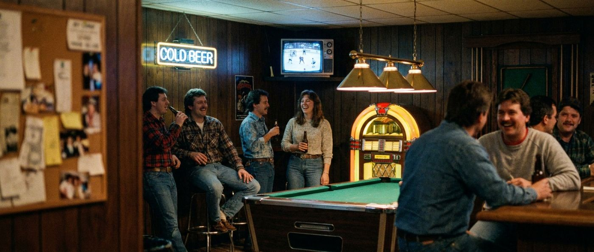
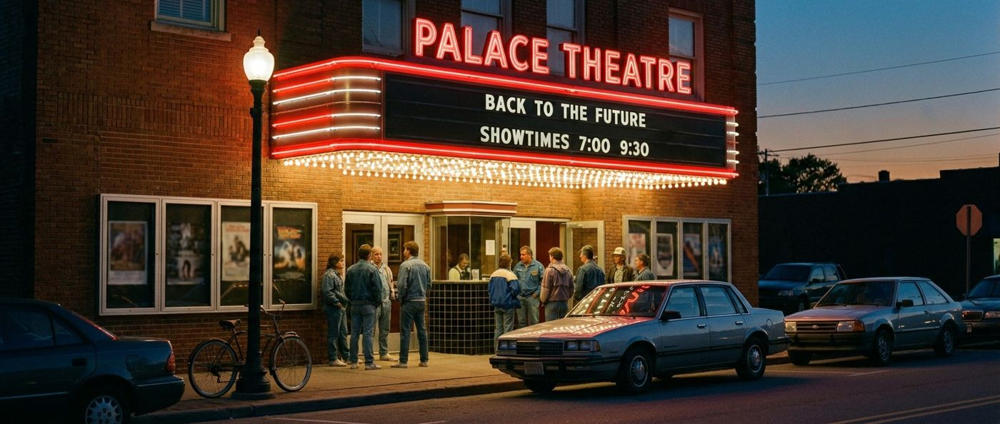
The Movie Theatre
“The Marquee”
You read it from across the parking lot.
The letters were white plastic, three inches tall, snapped into a black track that ran the length of the sign. Someone had put them there with a pole, standing on a ladder in the afternoon, arranging the title of whatever was opening Friday. Sometimes a letter was missing. Sometimes the spacing was slightly off. It didn’t matter. You already knew what you were seeing.
The lobby was its own world. The carpet was patterned in a way designed to hide everything — it had absorbed decades of spilled Coke and never showed it. The popcorn smell started in the parking lot and didn’t stop. The concession stand was backlit, the prices on the overhead board in that specific font that appeared nowhere else. The person behind the counter moved fast and didn’t make eye contact.
There is no other darkness like it.
The house lights dimmed slowly. Not all at once — gradually, like someone was taking their time about it. The curtain, if there was a curtain, pulled back. The projector beam cut through the dark above your head. The screen went from grey to white to the first frame.
There is no other darkness like it. The specific dark of a movie theatre, full of people who’ve agreed to be somewhere else for two hours. The projector behind you, the screen in front of you, and everything you knew about the world suspended.
You went every Friday you could afford to.
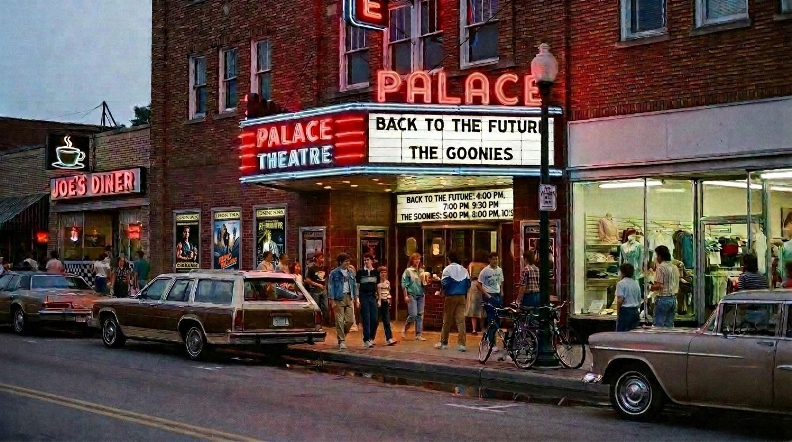
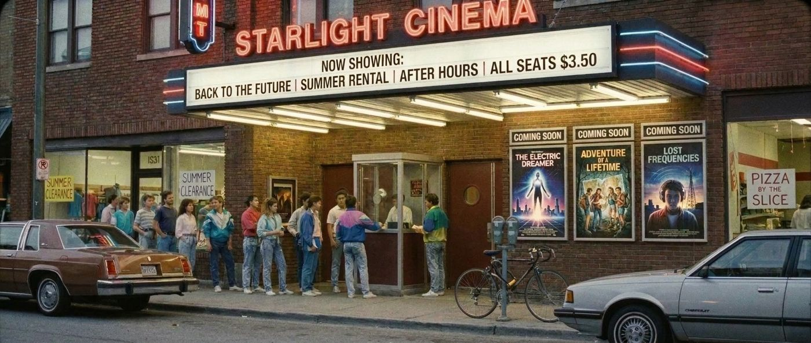
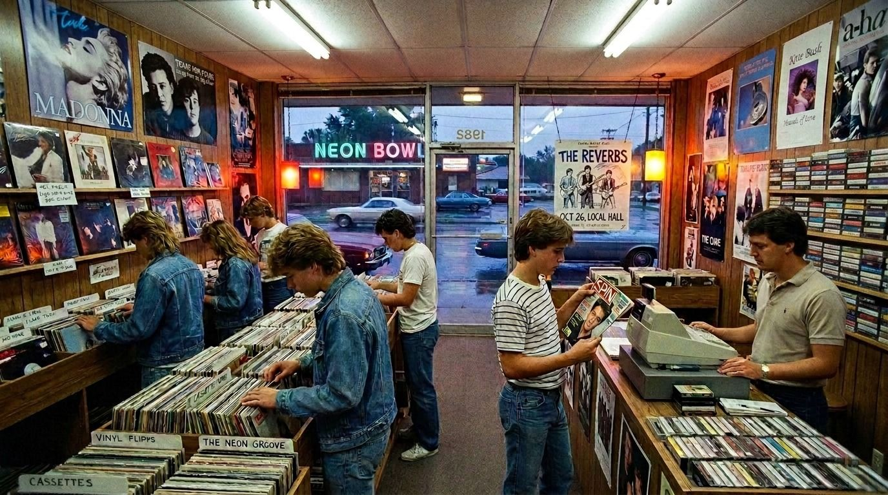
The Record Store
“The Bins”
You went in for one thing and came out with three.
That was how it always worked. The one you came in for — the new release, the thing you’d heard on the radio, the album your friend wouldn’t stop talking about — was usually near the front, racked at eye level, obvious. But the bins were in the back. Long, alphabetized rows of albums standing upright, their spines a vertical library of fonts and logos and names you’d never heard of. You flipped through them the way you read — fast at first, then slower when something caught.
The cover art was the whole argument. Before you heard a single note you had already decided something based on the painting, the photo, the typography. You were right more often than you should have been.
The record store is gone. The listening is still there.
The person behind the counter had opinions. Strong ones, offered without prompting if you lingered near the right section. They had heard everything and forgotten nothing. If they recommended something you trusted it, even if you’d never heard of the band. That was the deal.
Cassettes were for the car. Albums were for home — the sleeve pulled out, the inner sleeve unfolded, the needle down. You read the liner notes while the first side played. You knew the sequence of every album you loved the way you knew the layout of your own house.
The record store is gone. The listening is still there.
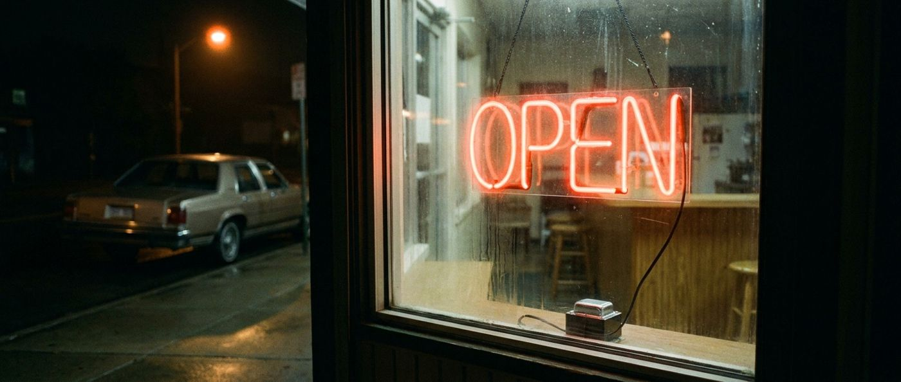
The sign was never turned off.
The arcade is still running. The diner booth still holds the shape of everyone who sat in it. The record store bin still has the one you’ve been looking for. The marquee is still spelling out something worth seeing. The sign was never turned off.
RetroNeonLounge is where people who remember come together — to go deeper, to find what they’ve been looking for, and to stop apologizing for loving it.
The channel is the window.
This is the door.